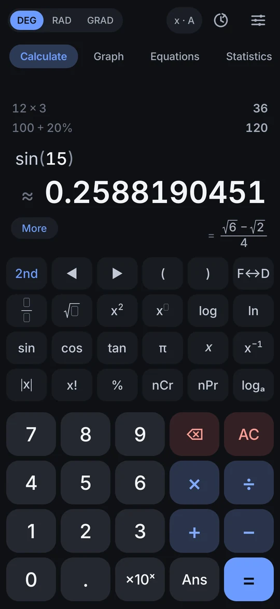
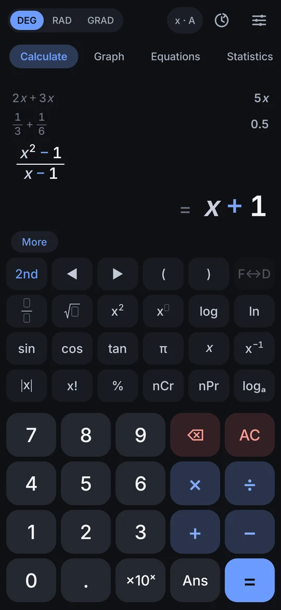
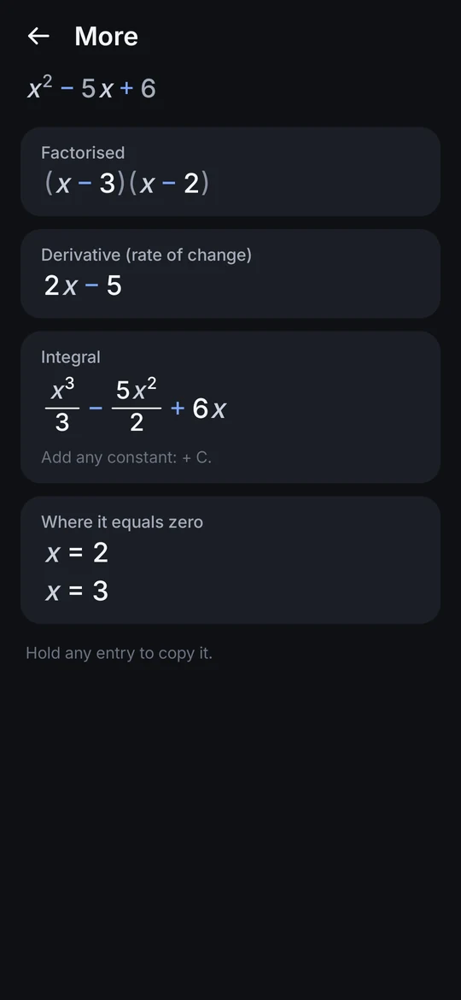
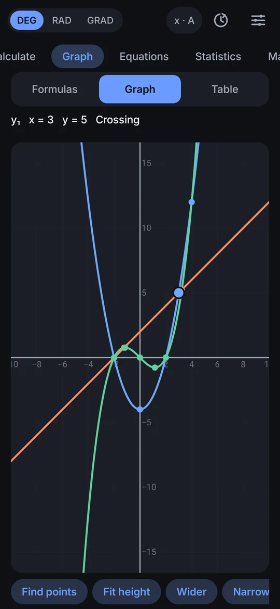
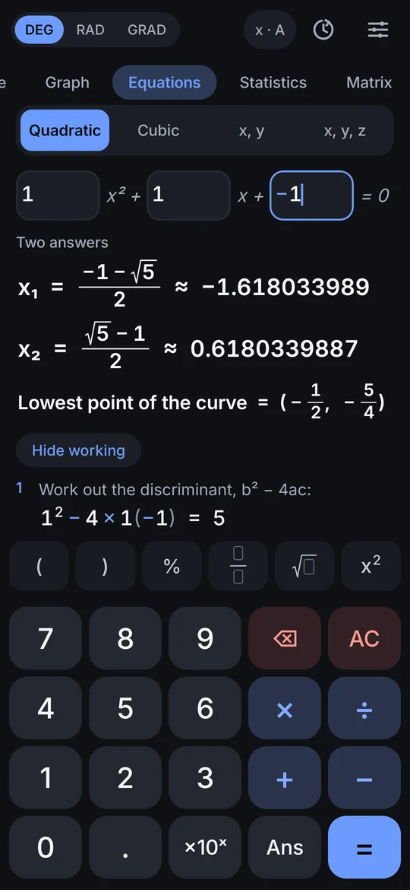
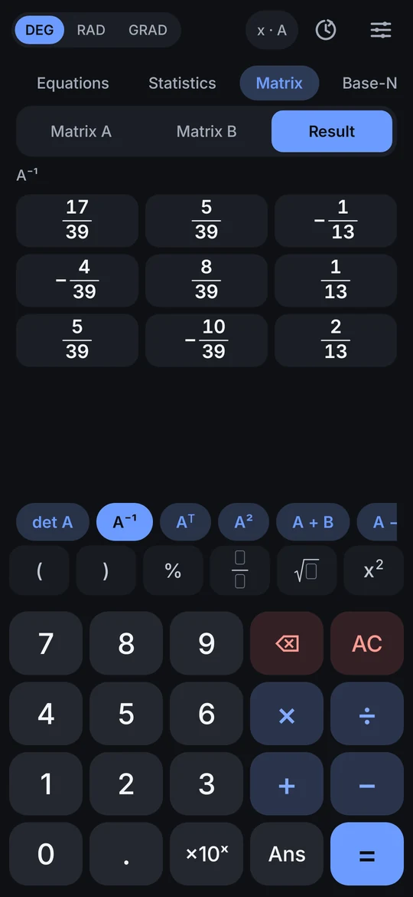
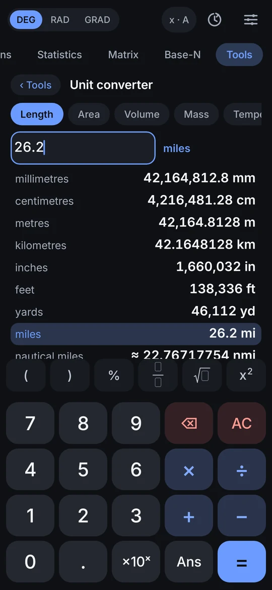
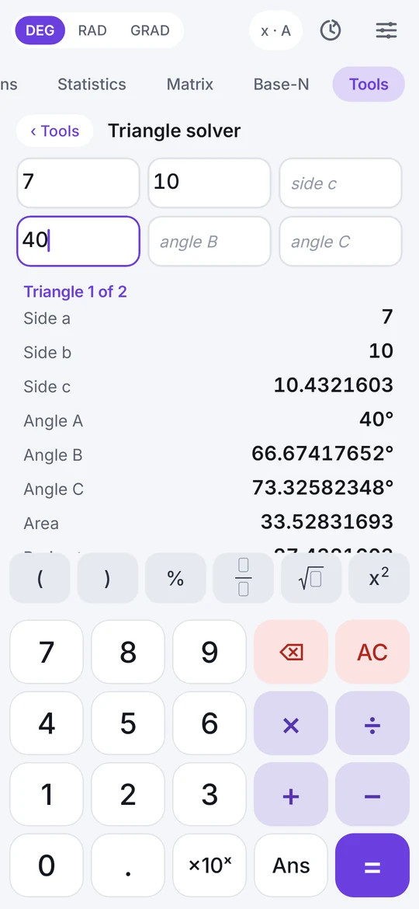
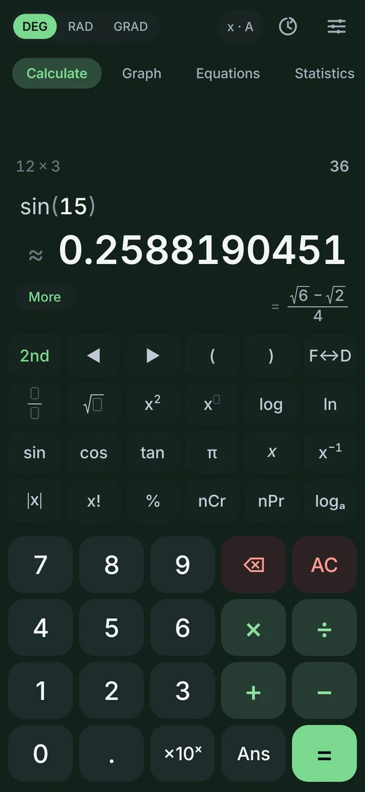
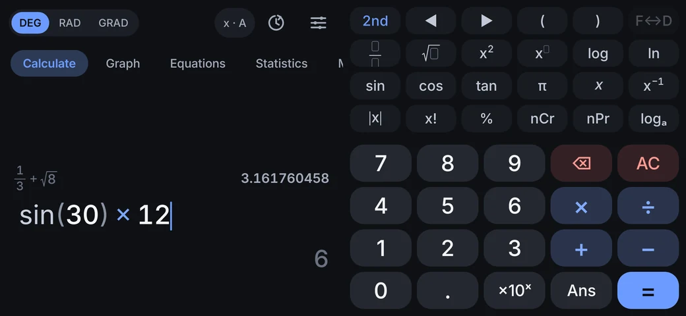

The answer, and proof it is right.
Axiom is a scientific calculator for Android. It draws sums the way you write them, keeps answers exact, and tells you plainly whether an answer is exact or rounded.
It also does algebra, solves equations with the working shown, draws graphs, and converts units. It is free, with no adverts and nothing to unlock, and it cannot go online.
Free, with nothing to unlock. Android 12 or later. No ads, no accounts. Release notes
Chrome may say the file might be harmful. It shows this for app files that do not come from Google Play. Choose Download anyway.

How it works
Most calculator apps give you a decimal and leave you to trust it. Axiom is built round three ideas.
Type it as you write it
Fractions, roots and powers are drawn as they are on paper, and the answer appears as you type. One label on each key, with a second layer one press away.
Exact first
Whole numbers and fractions never touch rounded arithmetic, so 0.1 + 0.2 is 0.3. Roots and π stay exact until the last moment.
Checked before it is shown
Every decimal is worked out twice. Every exact form is typed back in and compared. Anything that fails a check is not shown.
What it looks like
Clean keys, a display that reads like a textbook, and a mode for each kind of work.
CalculateSums drawn as they are written on paper, with the exact form under the decimal. 
AlgebraType a sum with x in it and Axiom simplifies it. 
MoreFactorise, expand, differentiate, integrate and find the zeros from one button. 
GraphUp to four curves. Find where they cross the axis, turn and meet. 
EquationsQuadratics, cubics and simultaneous equations, with the working. StatisticsType a list of values and every statistic is worked out at once. 
MatrixDeterminant, inverse and products, with fractions kept exact. 
Unit converterType a value once and see it in every unit. 
Triangle solverAny three measurements give the rest, including both answers when there are two. 
ThemesEight themes and six accent colours.

Everything is in, and all of it is free
You can use Axiom as a plain calculator and never open another mode. The rest is there when you need it.
- Textbook display
- Fractions are stacked, roots stretch over what they cover and powers are raised. What you see is what you would write.
- Exact answers
- Fractions, roots and π stay exact: sin 15° is (√6 − √2)/4 as well as 0.2588190451. One tap switches between the two.
- An honest equals sign
- An exact answer is shown with =. A rounded one is shown with ≈. You always know which you are looking at.
- Errors in plain English
- A mistake is underlined where it is, with a sentence that says what is wrong. No “Syntax ERROR”.
- Algebra
- Simplify, expand, factorise, differentiate and integrate formulas in x, y and z.
- Equations with working
- Quadratics, cubics, and two or three simultaneous equations, with the steps shown.
- Graphs
- Plot up to four formulas. Drag, pinch, read a curve, and find crossings and turning points. A table of values is one tap away.
- Statistics
- Mean, median, mode, quartiles, and both standard deviations of a list, with totals and averages exact.
- Matrices
- Up to 4 × 4: determinant, inverse, transpose, sums and products.
- Complex numbers
- Any sum with i in it is worked as a complex number, and its size and angle are shown.
- Base-N
- Binary, octal, decimal and hexadecimal sums with AND, OR, XOR and NOT.
- Your own functions
- Save any formula in x as f, g, h and so on, then use it like sin or log.
- Memories and history
- Six memories that survive closing the app, and a searchable history with pins and no limit.
- Unit converter
- Twelve kinds of unit. Every factor is the exact legal definition, so a mile is 1,609.344 metres exactly.
- Shapes and triangles
- Areas and volumes of twelve shapes with answers such as 45π, and a solver for any triangle.
- Constants and formulas
- Twenty-two physical constants at their 2022 recommended values, and seven sheets of formulas.
- Home-screen widget
- A small calculator for everyday sums, with the same exact arithmetic.
- Backup
- One file holds your history, memories, functions and settings. Keep it anywhere or move it to a new phone.
- Phones and tablets
- Works upright and on its side. On a tablet the keys sit beside the working area.
- Accessible
- Every key and answer is labelled for TalkBack, text follows your phone's size setting, and there is a stronger-contrast option.
How the answers are kept right
A calculator is only worth having if you can trust it. These checks run on every build and inside the app as you use it.
4,000 known answers
Every build must match 4,000 sums whose answers were worked out by a separate maths library, to 15 figures.
Every decimal twice
A decimal is worked out a second time at double the precision and shown only when both agree to 30 figures.
Exact forms typed back
An exact form such as (√6 − √2)/4 is typed back through the calculator and compared with the original before it is shown.
Algebra tested by numbers
A simplified formula, derivative or integral is shown only if it agrees with what you typed at several test points.
Answers put back
The solution of an equation is put back into the equation, and an inverse matrix is multiplied back by the original.
More known answers
1,000 complex sums, 300 matrices, 400 sets of statistics and 1,500 base-N sums are checked the same way.
What it asks of your phone
Nothing. Axiom asks for no permissions at all: not the internet, not your files, not your camera.
| Access | What Axiom does with it | What it never does |
|---|---|---|
| Internet | Axiom has no internet permission. Android itself stops it going online. | Send anything anywhere, show adverts or check for updates. |
| Files | Only the one backup file you choose to save or open, through Android's own file picker. | Look at any other file on your phone. |
| Clipboard | Copies an answer when you hold it. | Read what you have copied elsewhere. |
The detail is in the privacy policy.
Questions
Is Axiom really free?
Yes. There is no paid version, no subscription, no trial and no adverts, and nothing in the app is locked.
Is Axiom on Google Play?
No. It is downloaded from this site as an Android app file. Android asks you to allow the install the first time.
Does it need the internet?
No. Axiom has no internet permission, so it cannot go online at all. Everything, including algebra and graphs, works on the phone.
Which phones does it run on?
Phones and tablets with Android 12 or later.
How accurate is it?
Whole numbers and fractions are worked exactly. Roots, π and trigonometry are kept exact and turned into a decimal only for display, to the number of figures you choose. Graph readings and the triangle solver give rounded answers.
Can it take a photo of a sum?
No. Sums are typed. Reading sums from photos is unreliable, and a wrong reading gives a wrong answer that looks right.
How do I move to a new phone?
In Settings, Backup, save a backup file. Install Axiom on the new phone and restore from that file.
Getting Axiom
Axiom is a personal project and is free, with no paid version. It is downloaded from this site as an Android app file and is not on Google Play. It runs on phones and tablets with Android 12 or later.
When you download, Chrome may warn that the file might be harmful. It shows this warning for app files that do not come from Google Play; choose Download anyway. If you want to be sure the file is the real one, compare it with the checksum in the release notes.
Open the downloaded file to install it. The first time, Android asks you to allow your browser to install apps. Google Play Protect may also step in, because Axiom is an app it has not seen before: choose More details, then Install anyway. To update, install the latest version over the one you have: your history, memories and settings are kept. What changed in each version is in the release notes.
Axiom is checked with care, but no calculator should be the only check on a result that safety or money depends on. See the terms of use.